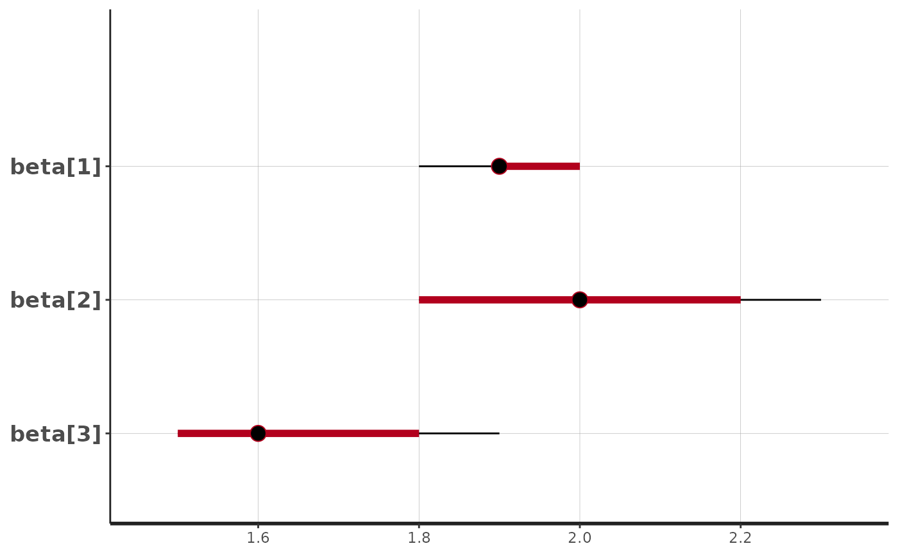
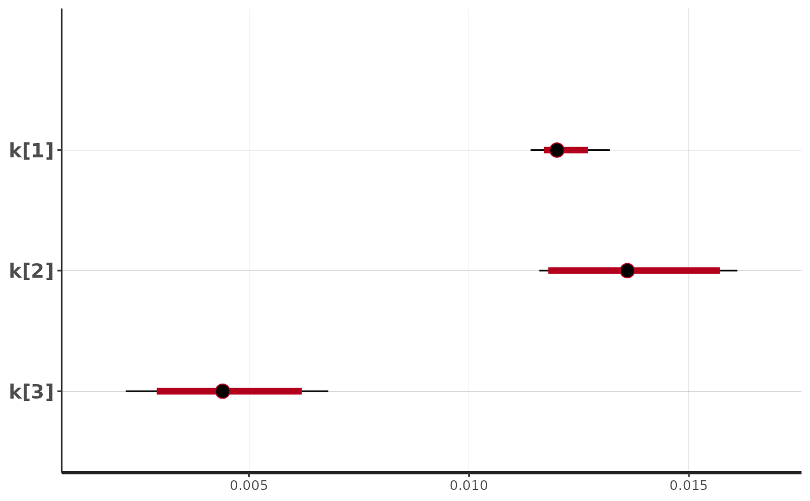
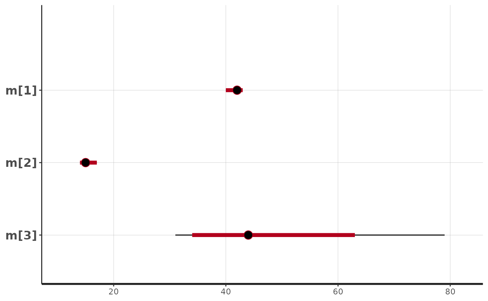

Fits exponential beta curves to 13C breath test series data using Bayesian Stan methods. See https://menne-biomed.de/blog/breath-test-stan for a comparision between single curve, mixed-model population and Bayesian methods.
Usage
stan_fit(
data,
dose = 100,
sample_minutes = 15,
student_t_df = 10,
chains = 2,
iter = 1000,
model = "breath_test_1",
seed = 4711
)Arguments
- data
Data frame or tibble as created by
cleanup_data, with mandatory columnspatient_id, group, minuteandpdr. It is recommended to run all data throughcleanup_datawhich will insert dummy columns forpatient_idandminuteif the data are distinct, and report an error if not. Since the Bayesian method is stabilized by priors, it is possible to fit single curves.- dose
Dose of acetate or octanoate. Currently, only one common dose for all records is supported.
- sample_minutes
If mean sampling interval is < sampleMinutes, data are subsampled using a spline algorithm
- student_t_df
When student_t_df < 10, the student distribution is used to model the residuals. Recommended values to model typical outliers are from 3 to 6. When student_t_df >= 10, the normal distribution is used.
- chains
Number of chains for Stan
- iter
Number of iterations for each Stan chain
- model
Name of model; use
names(stanmodels)for other models.- seed
Optional seed for rstan
Value
A list of classes "breathteststanfit" and "breathtestfit" with elements
coefEstimated parameters as data frame in a key-value format with columnspatient_id, group, parameter, methodandvalue. Has an attribute AIC.dataThe effectively analyzed data. If density of points is too high, e.g. with BreathId devices, data are subsampled before fitting.stan_fitThe Stan fit for use withshinystan::launch_shinyor extraction of chains.
Examples
library(breathtestcore)
suppressPackageStartupMessages(library(dplyr))
d = breathtestcore::simulate_breathtest_data(n_records = 3) # default 3 records
data = breathtestcore::cleanup_data(d$data)
# Use more than 80 iterations and 4 chains for serious fits
fit = stan_fit(data, chains = 1, iter = 80)
plot(fit) # calls plot.breathtestfit
# Extract coefficients and compare these with those
# used to generate the data
options(digits = 2)
cf = coef(fit)
cf %>%
filter(grepl("m|k|beta", parameter )) %>%
select(-method, -group) %>%
tidyr::spread(parameter, value) %>%
inner_join(d$record, by = "patient_id") %>%
select(patient_id, m_in = m.y, m_out = m.x,
beta_in = beta.y, beta_out = beta.x,
k_in = k.y, k_out = k.x)
#> # A tibble: 3 × 7
#> patient_id m_in m_out beta_in beta_out k_in k_out
#> <chr> <dbl> <dbl> <dbl> <dbl> <dbl> <dbl>
#> 1 rec_01 34 35.0 1.77 1.69 0.00946 0.00871
#> 2 rec_02 53 52.3 1.93 1.93 0.0105 0.0105
#> 3 rec_03 48 62.3 1.48 1.36 0.00513 0.00374
# For a detailed analysis of the fit, use the shinystan library
# \donttest{
library(shinystan)
#> Loading required package: shiny
#>
#> This is shinystan version 2.6.0
# launch_shinystan(fit$stan_fit)
# }
# The following plots are somewhat degenerate because
# of the few iterations in stan_fit
suppressPackageStartupMessages(library(rstan))
stan_plot(fit$stan_fit, pars = c("beta[1]","beta[2]","beta[3]"))
#> ci_level: 0.8 (80% intervals)
#> outer_level: 0.95 (95% intervals)

stan_plot(fit$stan_fit, pars = c("k[1]","k[2]","k[3]"))
#> ci_level: 0.8 (80% intervals)
#> outer_level: 0.95 (95% intervals)

stan_plot(fit$stan_fit, pars = c("m[1]","m[2]","m[3]"))
#> ci_level: 0.8 (80% intervals)
#> outer_level: 0.95 (95% intervals)
